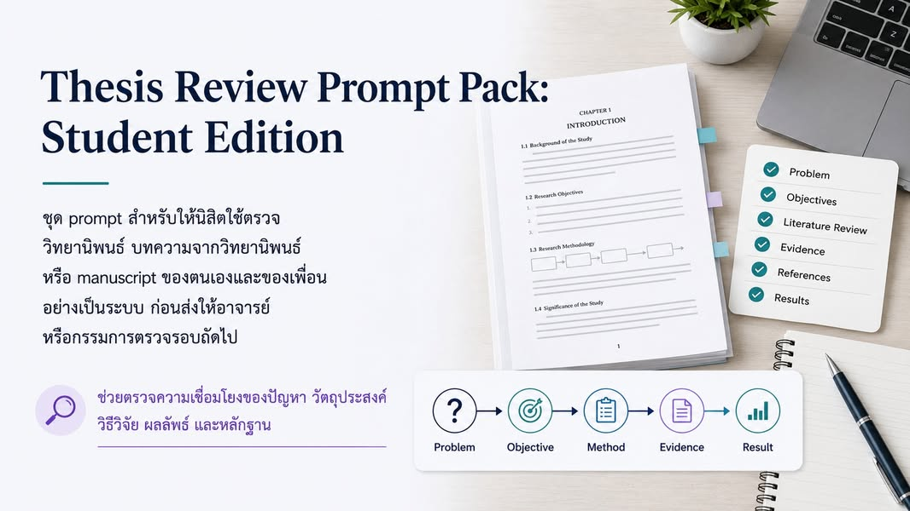

Thesis Review Prompt Pack: Student Edition
{kind=link}

ผมทำ Thesis Review Prompt Pack: Student Edition ไว้ให้นิสิตใช้ตรวจวิทยานิพนธ์ บทความจากวิทยานิพนธ์ หรือ manuscript ของตนเองและของเพื่อน ก่อนส่งให้อาจารย์ที่ปรึกษาหรือกรรมการตรวจรอบถัดไป
แนวคิดตั้งต้นคือ การตรวจงานวิจัยที่ดีไม่ใช่แค่ตรวจภาษา แต่ต้องตรวจว่า “เรื่องทั้งเรื่องต่อกันจริงไหม” ตั้งแต่ปัญหาไปจนถึงข้อสรุปและข้อจำกัด
ตรวจสายโซ่ของเหตุผล ไม่ใช่ตรวจประโยคแยกกัน
แกนของการ review คือการไล่ความสัมพันธ์จาก ปัญหาวิจัย → วัตถุประสงค์ → วิธีวิจัย → ข้อมูลและหลักฐาน → ผลลัพธ์ → claim → reference → limitation ถ้าข้อต่อใดขาด งานอาจดูสมบูรณ์ในระดับภาษา แต่ยังไม่สามารถปกป้องข้อสรุปทางวิชาการได้
ปัญหาที่พบบ่อยจึงไม่ได้มีเพียงถ้อยคำไม่ชัด แต่อาจเป็น objective ที่ไม่ตอบ problem, literature review ที่เรียงสรุป paper โดยไม่สังเคราะห์ gap, baseline ที่หายไป, contribution ที่ผลลัพธ์ยังรองรับไม่พอ หรือ claim ที่แรงเกินหลักฐาน
ให้ AI รับบทเป็นผู้ตั้งคำถามแบบ reviewer
ชุด prompt ออกแบบให้ AI ช่วยค้นหาความไม่สอดคล้อง แยก blocking issue ออกจากข้อเสนอปรับปรุง และสร้างคำถามที่ผู้วิจัยควรกลับไปตอบ ไม่ได้ออกแบบให้ AI ปรับต้นฉบับอัตโนมัติหรือทำหน้าที่แทน reviewer จริง
ผลลัพธ์ที่ดีจึงไม่ใช่เอกสารที่ AI เขียนให้ดูดีขึ้นทันที แต่คือรายการปัญหา หลักฐานที่ยังขาด คำถามที่ต้องตอบ และ action ที่เจ้าของงานสามารถนำกลับไปคิดและแก้ด้วยตนเอง
17 มุมตรวจที่ช่วยไม่ให้เห็นเฉพาะจุดที่ตนถนัด
Prompt pack ครอบคลุมตั้งแต่ระดับและ venue ของงาน, title และ abstract, น้ำหนักของปัญหา, literature review และ reference, ความสอดคล้องระหว่าง objective กับ gap, ผลลัพธ์และ contribution, traceability, วิธีแก้และ baseline, ข้อมูลและความเป็นไปได้ ไปจนถึง scope และ limitation
นอกจากนี้ยังรวม ethics, IRB, กฎหมายและข้อบังคับ, การใช้ LLM อย่างรับผิดชอบ, acknowledgement, document hygiene, ตารางและรูปภาพ รวมถึง verdict แบบ reviewer เพื่อจัดลำดับว่าอะไรคือ blocking issue ที่ควรแก้ก่อน
ไม่ต้องใช้ทุก prompt ในครั้งเดียว
นิสิตที่เพิ่งเริ่มใช้สามารถเลือกตรวจเฉพาะ abstract, problem, objective, literature review, reference และ result ก่อน การเริ่มจากจุดสำคัญไม่กี่จุดช่วยให้เห็นโครงของงานและลดภาระจาก feedback จำนวนมากเกินกว่าจะจัดการได้
เมื่อ draft มีโครงสร้างและหลักฐานมากขึ้น จึงค่อยขยายไปยัง traceability, baseline, claim audit, ethics และการ review เชิงลึก เป้าหมายคือสร้างวงจรตรวจ–คิด–แก้ที่ผู้เรียนควบคุมได้ ไม่ใช่รัน checklist ให้ครบเพื่อให้ดูเหมือนงานผ่านแล้ว
มนุษย์ยังต้องรับผิดชอบต่อ feedback และการแก้ไข
AI อาจชี้ว่า citation ไม่ตรงกับ claim แต่ผู้ใช้ต้องเปิดแหล่งจริงเพื่อตรวจ AI อาจเสนอว่าการทดลองขาด baseline แต่ผู้วิจัยและอาจารย์ต้องตัดสินว่า baseline ใดเหมาะสม และ AI อาจมองเห็นความไม่สอดคล้องของเนื้อหา แต่ไม่รู้บริบททั้งหมดของศาสตร์ สถาบัน หรือกรรมการ
ดังนั้น ชุดนี้ไม่ควรถูกใช้เป็น auto-rewrite pipeline ควรสร้าง review notes ก่อน ให้เจ้าของงานตัดสินใจแก้ blocking issues แล้วจึงใช้ AI ช่วยในขั้นต่อไปพร้อมตรวจทุกการเปลี่ยนแปลง
จาก Student Edition สู่ workflow ที่เลือกตามความพร้อมของงาน
หน้าปัจจุบันของ prompt pack พัฒนาต่อจากรุ่นที่เผยแพร่ในโพสต์นี้ โดยแยกเส้นทาง Beginner สำหรับจัดไฟล์และหาสิ่งที่ขาด, Standard สำหรับ full review ก่อนส่งอาจารย์ และ Advanced สำหรับทดสอบ argument เชิงลึกหลังจากมี draft และหลักฐานเพียงพอ
ไม่ว่ารุ่นหรือ workflow จะเปลี่ยนไปอย่างไร หลักยังเหมือนเดิม: AI ช่วยอ่านและจัด feedback แต่นิสิตต้องตรวจหลักฐาน อธิบายเหตุผล และรับผิดชอบการตัดสินใจเอง
ใช้งาน Prompt Pack เปิด Thesis Review Prompt Pack: Student Edition เลือก workflow ตามความพร้อมของงาน พร้อมคู่มือภาษาไทยและอังกฤษ Companion Handout Research Methodology for AI-Assisted Thesis Review อ่านหลักคิดเรื่อง problem, evidence, decision และ claim ก่อนใช้ prompt pack ตรวจงานทั้งเล่ม